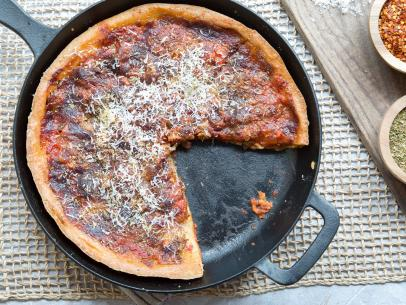

Deep Dish Pizza from Scratch

Deep dish pizza
This deep dish pizza will feed around 6 adults. If done correctly it should be about 3 inches deep and 15 inches across
Ingredients for the dough
- 1 1/2 cups warm water
- 11/2 cups warm water (about 110 degrees F)
- 1 (1/4-ounce) packages active dry yeast
- 1 teaspoon sugar
- 3 1/2 cups all-purpose flour
- 1/2 cup semolina flour
- 1/2 cup vegetable oil, plus 2 teaspoons to grease bowl
- teaspoon salt
Steps for the dough
- In a large bowl, combine the water (1 ½ cups), yeast, and sugar(1 tsp) and stir to combine. Let sit until the mixture is foamy, about 5 minutes.
- Add 1 1/2 cups of the flour, the semolina, 1/2 cup of the oil, and the salt, mixing by hand until it is all incorporated and the mixture is smooth. Continue adding the flour, 1/4 cup at a time(8 times), working the dough after each addition, until all the flour is incorporated but the dough is still slightly sticky.
- Turn the dough out onto a lightly floured surface and knead until smooth but still slightly tacky, 3 to 5 minutes. Oil a large mixing bowl with the remaining 2 teaspoons oil.
- Place the dough in the bowl and turn to oil all sides. Cover the bowl with plastic wrap and set in a warm, draft-free place until nearly doubled in size, 1 to 1 1/2 hours.